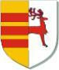

Antavla
255501088 Peder Haraldsen till Egeside

Far:
Harald Egeside till Vittskövle (1210? - )
Född:
omkring 1230 Vittskövle (M).
Död:
Vittskövle (M).
Barn med ?
Barn:
Gregers Pedersen till Vittskövle (1250? - 1285?)
Personhistoria
Årtal
Ålder
Händelse
1230?
Födelse omkring 1230 Vittskövle (M)
1250?
Sonen
127750544 Gregers Pedersen till Vittskövle
föds omkring 1250 Vittskövle (M)
1285?
Sonen
127750544 Gregers Pedersen till Vittskövle
dör omkring 1285 Vittskövle (M)
>1332
Barnbarnet
63875272 Peder Gregersen Egeside Hak till Vittskövle
dör efter 1332-07 Vittskövle (M)